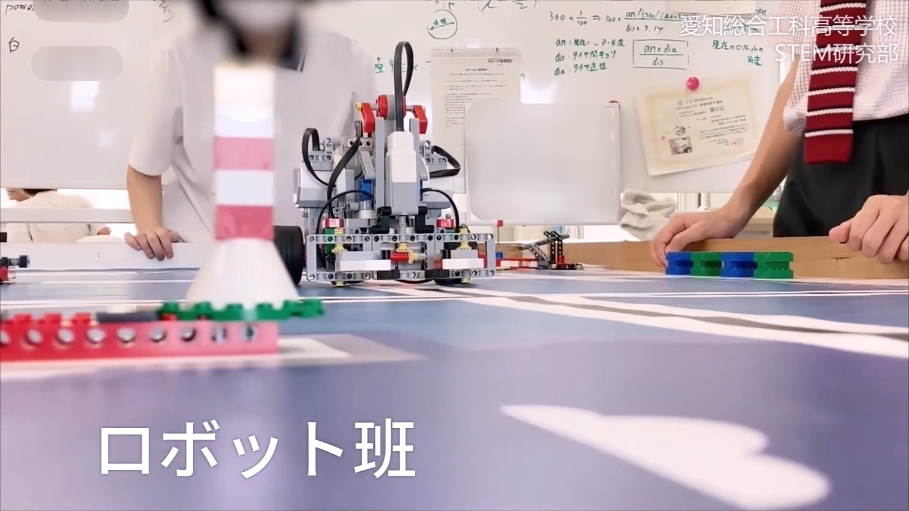
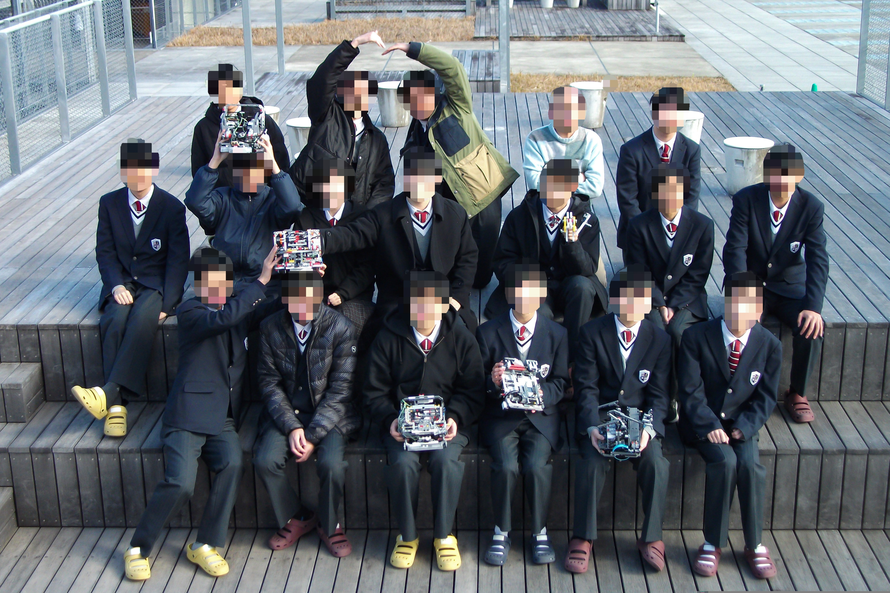
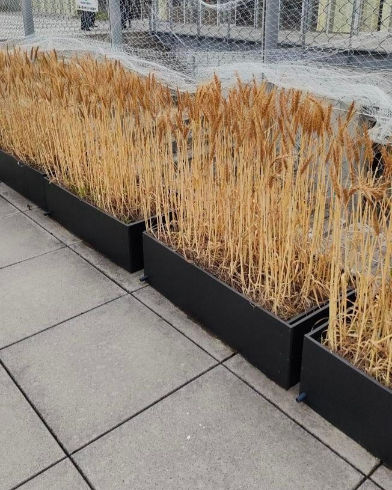
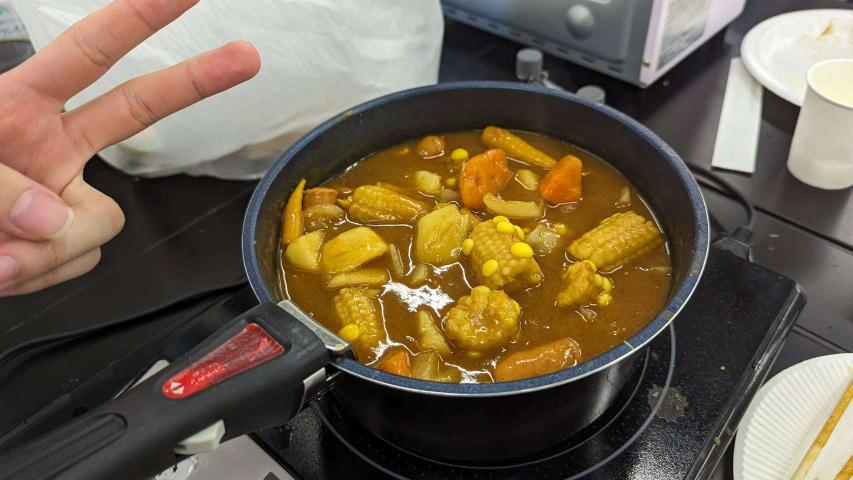
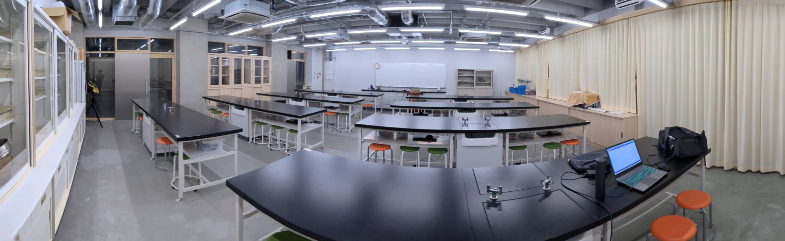
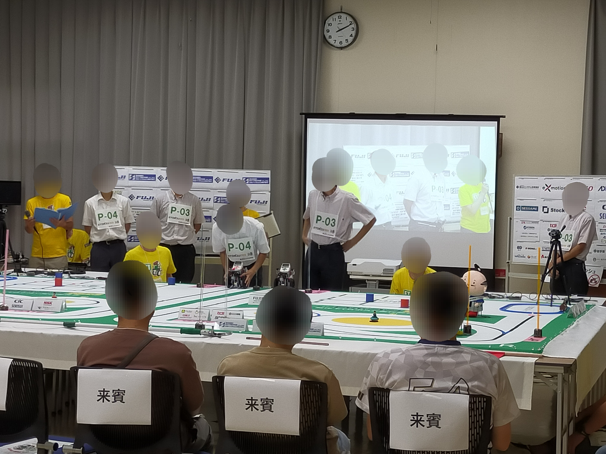
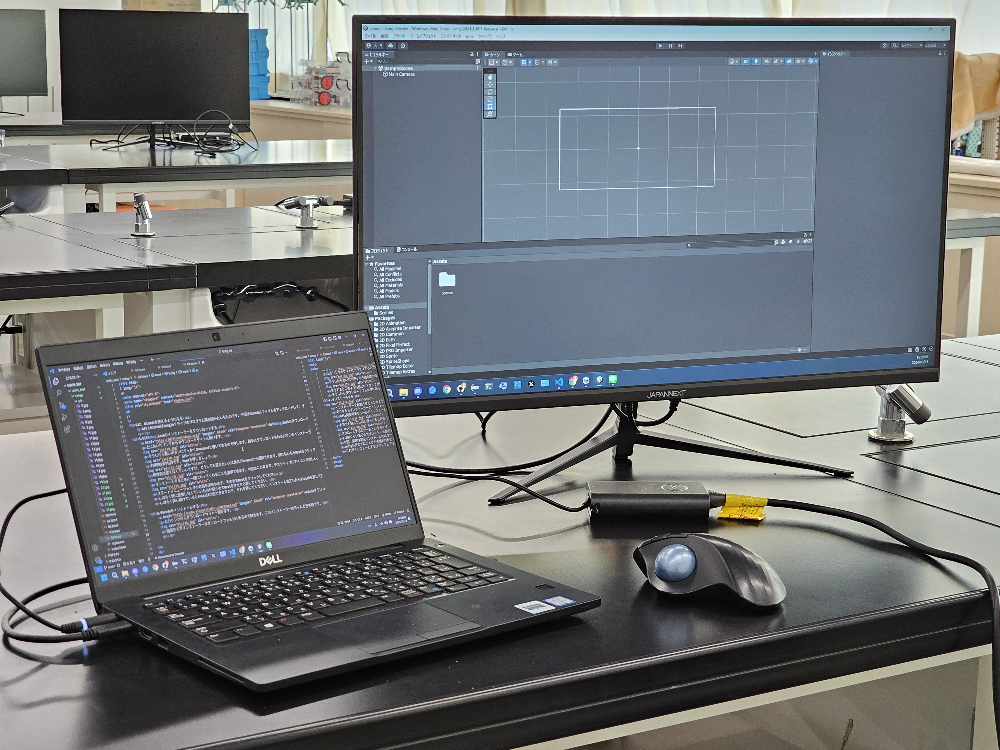
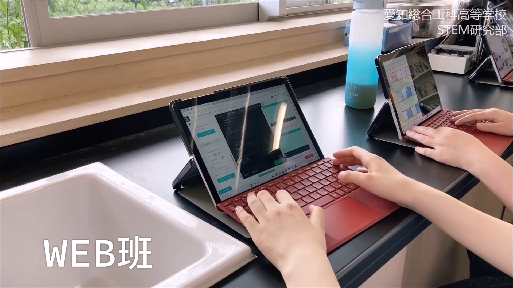
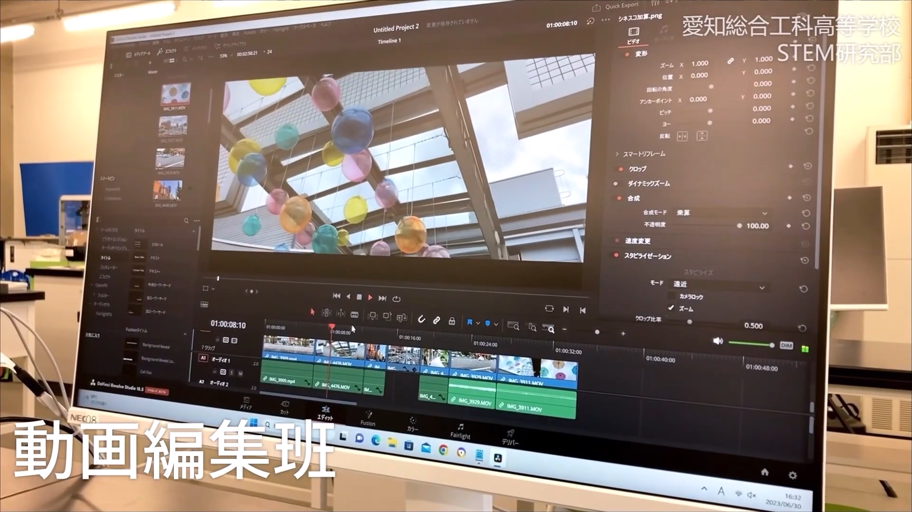
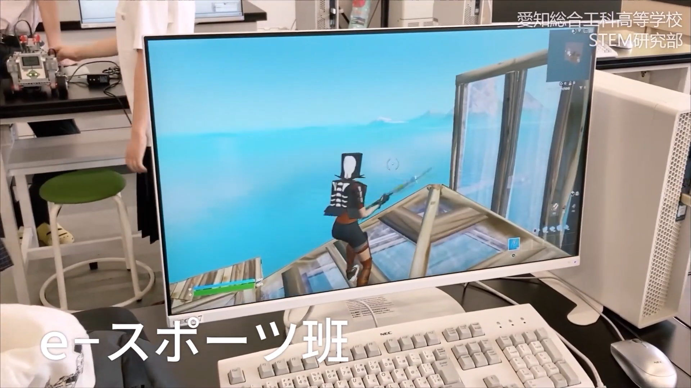

部活動/班について
STEM研究部は、
「STEAM
教育」の教育理念をもとに、
「STEAM」の文字から「A」の部分となる
「芸術・リベラルアーツ(Arts)」の分野を除いた
技術・工学分野を重点的に研究をしている部活動です。
STEAMとは、
「科学(Science)」
「技術(Technology)」
「工学(Engineering)」
「芸術・リベラルアーツ(Arts)」
「数学(Mathematics)」
上記5つの単語の頭文字を組み合わせた教育理念のこと。
ロボット分野で活用する言語「C」「Python」「C++」でのプログラム、
WEBサイトの作成で使用する「HTML」「CSS」「JavaScript」、
3Dモデリングやゲーム作成で使用する「Unity」や「Unreal Engine」で使われる言語、「C#」のプログラムなど、
様々なプログラム言語を学習したり、大会に向けて製作を行うなど、
それぞれの班が日々自由にまったり活動中！
あなたも一緒にSTEM研究部で活動しませんか？！
各班の活動内容・必要なもの
ロボット班
活動内容:
WRO(World Robot Olympiad)大会やRobocup Junior
といった大会での全国大会優勝を目標に、
各大会の決められたルールに合わせて複数チームで機体を製作し、
基本は「C言語」を使ってプログラミングを行っています。
班活動に必要なもの:
活動にあたり必要なものは特にはありませんが、プログラミングの担当者は
USBメモリ等の外部保存媒体やノートパソコンを持っていると活動が捗ると思います。
現班員の大半はノートパソコンを持っておりませんので、持っていない方でも班活動は可能です。
※生徒用に一人一台配布のノートパソコン(Surface Go3)でも活動は可能ですが、学校からの制限が多く、
活動に支障が出ることが何度かありました。
ゲーム製作(Unity)班
活動内容:
大会で結果を残す為、ゲーム製作を行う為の企画を立て、
企画を元に「Unity」を使って日々プログラミング/製作を行っています。
班活動に必要なもの:
ノートパソコンを持っていることが望ましいです。
現班員の大半が自身のノートパソコンで活動を行っています。
※生徒用に一人一台配布のノートパソコン(Surface
Go3
)でも活動できますが、
管理者権限等の関係から先生による許可が必要な場合が多いことに加え、
性能不足を感じる場面が多くお勧めできません。
WEB製作班
活動内容:
技能五輪大会のウェブデザイン部門など、
大会実績を残すデザインなど製作を目指して、活動しています。
動画編集班
活動内容:
日々「Premiere Pro」等のソフトウェアを使って編集、時には撮影から動画の製作を行い、全国高校生動画コンテストなどの大会で結果を残すことを目標に活動しています。
生徒会企画である三送会や、本部活動の紹介動画の製作なども行っています。
班活動にあると望ましいもの:動画ファイルは膨大なデータ量となる為、
データ保存に使うSSD
があると活動が捗ると思います。
e-スポーツ班
活動内容:
Fortnite™やVALORANT
™、ぷよぷよ™等、日頃から練習を行い、
大会優勝を目指して自分自身の技能を高めていく。
※令和5年度は部室のパソコンで活動しておりましたが、
利用可能台数の関係で令和6年度より自身のパソコンが必要になる可能性があります。
詳しくは顧問、部長などにお尋ねください。
小麦班
活動内容:
活動は不定期ですが、時期に合わせて小麦を育てて、
愛知総合工科高等学校 STEM研究部
-

写真1:ロボット班の活動の様子
-

写真2:令和5年(2023)度ロボット班の集合写真
- 詳細はこちら
-

写真1:小麦栽培の様子
-

写真2:育てた作物を使って楽しむ様子
部活動・班について
STEM研究部は、
「STEAM
教育」の教育理念をもとに、
「STEAM」の文字から「A」の部分となる「芸術・リベラルアーツ(Arts
)」の分野を除いた
技術・工学分野を重点的に研究をしている部活動です。
STEAMとは、
「科学(Science)」
「技術(Technology)」
「工学(Engineering)」
「芸術・リベラルアーツ(Arts)」
「数学(Mathematics)」
上記5つの単語の頭文字を組み合わせた教育理念のこと。
ロボット分野で活用する言語
「C言語」
「Python」
「C++」でのプログラム、
WEBサイトの制作で使用する
「HTML」
「CSS」
「JavaScript」、
3Dモデリングやゲーム制作で使用する
「Unity」や「Unreal Engine」で使われる言語、
「C#」や「C++」でのプログラムなど、
様々なプログラム言語を学習したり、大会に向けて制作/製作を行うなど、
それぞれの班が日々自由にまったり活動中！
あなたも一緒にSTEM研究部で活動しませんか？！

写真：ゲーム制作(Unity)班が活動している部屋の風景
各班の活動内容・必要なもの
ロボット班
活動内容:
WRO(World Robot Olympiad)大会や
RobocupJuniorといった大会での全国大会優勝を目標に、
各大会の決められたルールに合わせて複数チームで機体を製作し、
基本は「C言語」を使ってプログラミングを行っています。
時には他校とも交流活動を行い、他校との友好関係を深めるなど、
大会に向けての活動意識を高め合う、意見交換活動なども積極的に行なっています。
班活動に必要なもの:
活動にあたり必要なものは特にはありませんが、プログラミングの担当者は
USBメモリ等の外部保存媒体やノートパソコンを持っていると活動が捗ると思います。
現班員の大半はノートパソコンを持っておりませんので、持っていない方でも班活動は可能です。
※生徒用に一人一台配布のノートパソコン(Surface Go3)でも活動は可能ですが、学校からの制限が多く、
活動に支障が出ることが何度かありました。
ETロボコン班

写真:ETロボコン班の活動の様子
活動内容:
大会で結果を残すことを目標に、
大会ルールに則りロボットのプログラミングをしています。
大会では、コース上をどれだけ上手く走れたかで点数を競います。
細かいプログラムの変更で動き方が変わる、
とても地道な作業ですが、やりがいが感じられる班活動です。
活動に必要なもの:
必要なものは特にありません。
知識的な面では、「C#」があると活動が捗ると思います。
「C言語」や「C++」の知識がある方は勿論、未経験の方も大歓迎です。
ゲーム制作(Unity)班

写真:ゲーム製作(Unity)班の活動の様子
活動内容:
ゲーム制作班では、
「C#」を用いて「Unity」や「Unreal Engine」でのゲーム制作に力を入れています。
「神ゲー創造主エボリューション」、
「ゲームクリエイター甲子園」などの大会に出場し、実績を残しています。
班員同士で協力し日々アイデアを元にした企画書の改善、
ユーザーに寄り添ったUIの考案、ゲームシステムの改善をしています。
「ChatGPT」などのAIを活用したゲーム開発を展開し、
常に新しくそして革新的なゲームデザインを目指しています。
ゲーム制作(Unity)班では、生徒の制作したゲームが、
日本ゲーム大賞2021“U18部門”の金賞に選ばれたことがあります。
「日本ゲーム大賞2021“U18部門”の金賞は『Balloon Head』に決定！
頭が風船の主人公を操作して進んでいくアクションゲーム」
班活動に必要なもの:
ノートパソコンを持っていることが望ましいです。
現班員の大半が自身のノートパソコンで活動を行っています。
活動に使用するノートパソコン推奨性能:
活動に必要な最小推奨性能-CPU:Core i5 第8世代以上 OS:Windows10以上 メモリ:8GB
購入推奨性能-CPU:Core i5 第10世代以上 OS:Windows11 メモリ:8GB
※生徒用に一人一台配布のノートパソコン(Surface Go3)でも活動できますが、
管理者権限等の関係から先生による許可が必要な場合が多いことに加え、
性能不足を感じる場面が多くお勧めできません。
WEB制作班

写真:WEB制作班の活動の様子
活動内容:
技能五輪大会のウェブデザイン部門など、
大会実績を残すデザインなど制作を目指して、活動しています。
業務用ITソフトウェア・ソリューションズ班

写真:業務用ITソフトウェア班の活動の様子
活動内容:
業務用ITソフトウェア班では、
業務上発生する課題解決に焦点を当てソフトウェアの開発に取り組んでいます。
「若年者ものづくり競技大会 業務用ITソフトウェア・ソリューションズ職種」
へと出場しており数々の成績を収めています。
「Java」をプログラミング言語として数々のフレームワークを活用し、
管理者と利用者の両方が使いやすいソフトウェアの開発を実現しています。
日々新しい情報を取り入れながらユーザー目線のUIの開発や効率化を図ったデータベースデザイン、
業務に合ったプログラムの作成に取り組んでいます。
動画製作/編集班

写真:動画制作/編集班の活動の様子
活動内容:
日々「Adobe Premiere Pro」等のソフトウェアを使って編集、
時には撮影から動画の制作を行い、
全国高校生動画コンテストなどの大会で結果を残すことを目標に活動しています。
生徒会企画である三送会や、本部活動の紹介動画の制作も行っています。
班活動にあると望ましいもの:
動画ファイルは膨大なデータ量となる為、
データ保存に使うSSD
があると活動が捗ると思います。
e-スポーツ班

写真:e-スポーツ班の活動の様子
活動内容:
Fortnite™やVALORANT™、ぷよぷよ™等、
大会優勝を目指して自分自身の技能を高めるため、
日頃から練習を行っています。
※令和5年度は部室のパソコンで活動しておりましたが、
利用可能台数の関係で令和6年度より自身のパソコンが必要になる可能性があります。
また、2024年3月現在、e-スポーツ班はメンバーが足りていない為、活動を縮小する恐れがあります。
詳しくは顧問、部長などにお尋ねください。
小麦班
活動内容:
活動は不定期ですが、11~7月に小麦育てています。
その他にも、時期に合わせて夏野菜・冬野菜、お花を育てる等、
色々な活動を行っております。
育てた作物は、調理を行ってパンや夏野菜カレーを作ったり、
収穫したお花でレジンのアクセサリー製作を行う等しています。